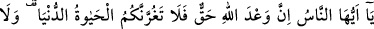
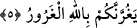
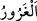
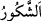
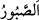

5. Ey insanlar! Allah’ın vaadi gerçektir, sakın dünya hayatı sizi aldatmasın ve o
aldatıcı (şeytan) da Allah hakkında sizi kandırmasın!
“Ey insanlar! Allah’ın” diriliş ve cezâ ile olan “vaadi” sâbit ve “gerçektir,” bunda
şüphe ve cayma yoktur.
et-Te’vîlâtü’n-Necmiyye’de der ki; Allah Teâlâ burada şuna işâret etmektedir: Allah
Teâlâ’nın vaad ettiği her şey; sevap, azap, cennetteki dereceler, cehennemdeki
derekeler; yâni azap hücreleri, yüceler yücesindeki ve yüce Allah’ın huzurunda hak
meclisindeki yakınlıklar ve aşağıların en aşağısına uzaklaşmak, bunların hepsi hak ve
gerçektir. Bunu bilen insan ölüm gelmeden önce ölüme hazırlanır. Rızık kaygısı çekmez.
Maîşet ve geçimi konusunda Allah’ı ithâm etmez. Tâat ve ibadeti artırmaya bakar;
Allah’ın takdîrine râzı olur, mutlu ve huzurlu yaşar.
“Sakın dünya hayatı” ile faydalanmak “sizi” âhireti talep etmekten ve âhiret için
çalışmaktan alıkoyup “aldatmasın,” dünya ziynet ve şehvetleri sizi riyâzet, mücâhede,
vatanı terk ve talep yolunda dostlardan ayrılıktan alıkoymasın. Görünüşte buradaki
yasaklama dünyaya yönelik olsa da esasen yasaklanan dünya değil; dünyaya aldanmadır.
Bazı eserlerde der ki: Ey Âdemoğlu! Mühlet ve zamanın uzunluğu seni aldatmasın.
Fırsatın elden kaçmasından endişe eden hemen tedbîrini alır.
A’lâ b. Ziyâd der ki; rüyamda dünyayı her türlü ziynet ve süsü takınmış olan zayıf,
çirkin ve şaşı biri olarak gördüm ve “Senden Allah’a sığınırım, sen kimsin?” dedim.
Bana, “Ben dünyayım, şayet benim şerrimden Allah’ın seni korumasından mutlu olursan
parayı sevme, hak ve hayır yollarına harcama yapmaya bak”, dedi.
Hadis-i şerifte şöyle vârid olmuştur: “Dünya akıllı insanların ganîmeti, câhillerin
gafletidir.”[59] Zira akıllı insanlar dünya tarlasına çeşitli ibâdet ve tâatlar ekerler.
Hasad ve harman günü olan kıyâmette bu ekini ganîmet olarak alırlar. Dünyanın âhiretin
ekin tarlası olduğunu bilmeyenler ise böyle değildirler.
Bostan’da denilmiştir ki:
Sakın fırsatı kaçırma, çünkü dünya bir tek nefesten ibarettir.
Bilge nazarında bir nefeslik zaman, cihandan kıymetlidir.
Dünya dilberine gönül bağlama.
Bu dilber kiminle oturduysa onun kalbini koparmıştır.
“Ve o aldatıcı (şeytan) da Allah”ın keremi, affı ve rahmetinin genişliği “hakkında
sizi kandırmasın!”
Aldatıcı anlamına gelen “
” kelimesi, “
” ve “
” kelimeleri gibi mübâlağa